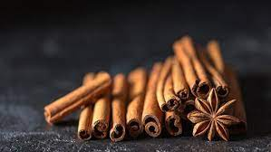
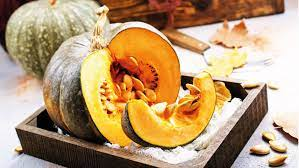

Somos curiosos
Siempre tenemos ganas de hacer algo nuevo, algo distinto. Y la nobleza de la materia prima de la birra nos viene de 10. Hay infinitas maneras de meterle mano a las recetas para lograr un abanico enorme de combinaciones posibles.
El límite está en la cabeza. Queremos mostrarte algunas de nuestras birras de autor, con la intención de incitarte a abrir un poco el paladar y empezar a dejar de lado la idea de que las birras industriales light lager son lo único que hay.
Proyecto Barricas
Nos quisimos desafiar y surgió esta idea: lograr una birra especial con una etapa de maduración en madera. La protagonista? Una Barley Wine de 12% de alcohol. La magia? Una barrica de roble francés que en sus días de gloria almacenó un cabernet.
Este birrón estuvo 1 año madurando en la madera y luego otro año en barril de inoxidable. Una birra única, para tomar lento y disfrutar cada sorbito. Costó.... pero valió la pena.
Birras experimentales
Sentate Canela
Para crear esta cerveza utilizamos vainas de canela en dos etapas de la elaboración. El resultado nos encantó, muchísimo aroma y muy buena tomabilidad.
Pumpkin Ale
Inspirados en el Halloween, tenemos a esta birra estacional que es muy disfrutable. El dulzor de la calabaza está muy presente en el cuerpo de la birra, y está muy bien acompañada par algunas especias para perfumar. Dulce y truco.
Próximos pasos...
Escalado
Cada vez que vemos esos bloques de cocción nuevitos de inoxidable quedamos enamorados. Nuestro siguiente paso es poder escalar en el tamaño de producción y darle un respiro a nuetro ya cansado bloque actual.
En el garage de casa, ya tenemos en mente el planito con la nueva disposición de Fervere 2.0. Quedate tranquilo, cuando inauguremos te vamos a invitar a brindar con nosotros.
Bar de fábrica
Un sueño familiar. Tenemos muchas ganas de instalar nuestro propio bar de fábrica. Una meta que nos permitiría poder compartir nuestra pasión con ustedes directamente desde el calor de las ollas.